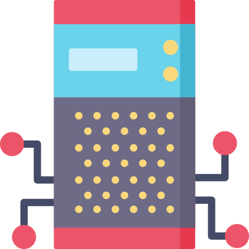

Bienvenue sur
le site de REGARDS OSS
Un framework et un ensemble de plugins pour gérer des archives scientifiques.
Learn REGARDS basics

Safely preserve your data
REGARDS is primary designed to store data and their metadata from spatial agency on safe storage systems.
To do this, the system design leans on the OAIS (Open Archival Information System) recommendation of the CCSDS
Consequently, the system allows high-performance ingestion of data and metadata available from providers, either in standard or non-standard formats.
- 
Harvest any metadata from anywhere.
REGARDS can harvest and index metadata from any source. Just use an existing data source plugin or develop your own.
REGARDS indexes metadata in a metacatalog structured by hot defined data models. and relying on the powerfull search engine ElasticSearch.

Deep search
REGARDS provides a simple, fast and efficient interface for discovering and accessing data.
Its metacatalog API provides a standard OpenSearch API (with parameter, geo and time extensions) and responses in GeoJson standard format.
Support for georeferenced and astronomical data
REGARDS is able to index and search Earth and Mars localized data as well as astronomical ones.
Download your data from everywhere
Regardless of the storage system(s) you connect to REGARDS, it will serve all your files through a HTTP server.
Manage your access rights on functionnalities, metadata, data
REGARDS allows to limit access to functionnalities through the concept of role. Default roles exist but you can create your own and define special user profile. A user is always attached to a single role.
Furthermore, REGARDS allows to limit metadata and data accesses through the concept of group. A group define accesses to one or more dataset. To be able to access these datasets, a user will have to be attached to one or more groups.

Scale as your need
REGARDS is a cloud native system and more precisely a microservice architecture. The system core integrates load balancing for batch jobs to enable hot-plugging of system resources.
Customize the system as your need
REGARDS is an extensible plugin architecture. The system core integrates a plugin engine enabling an integrator to customize system behaviors.